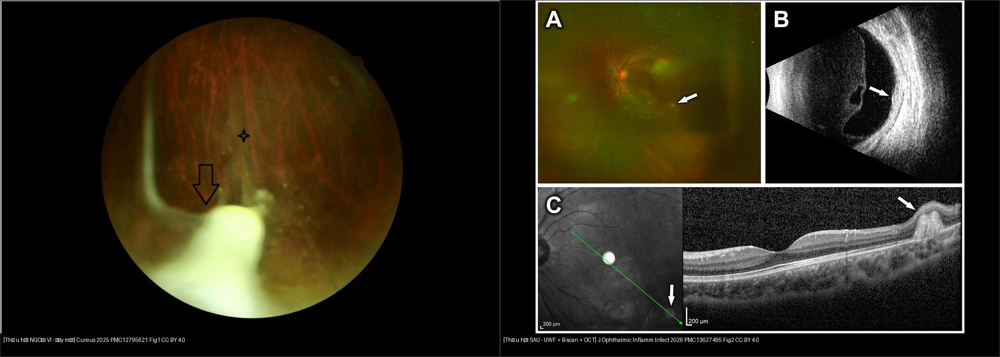
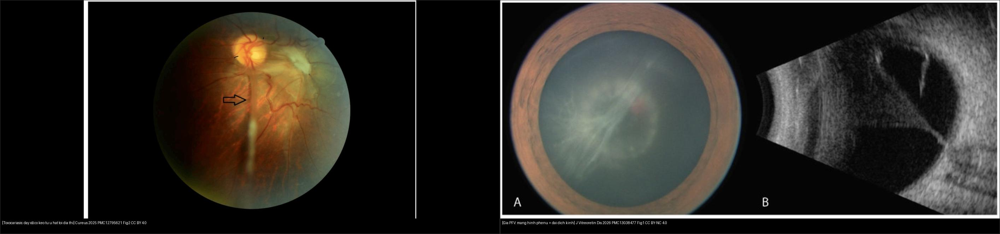
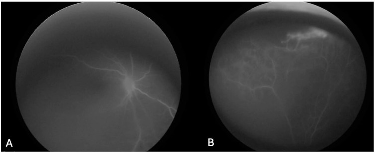
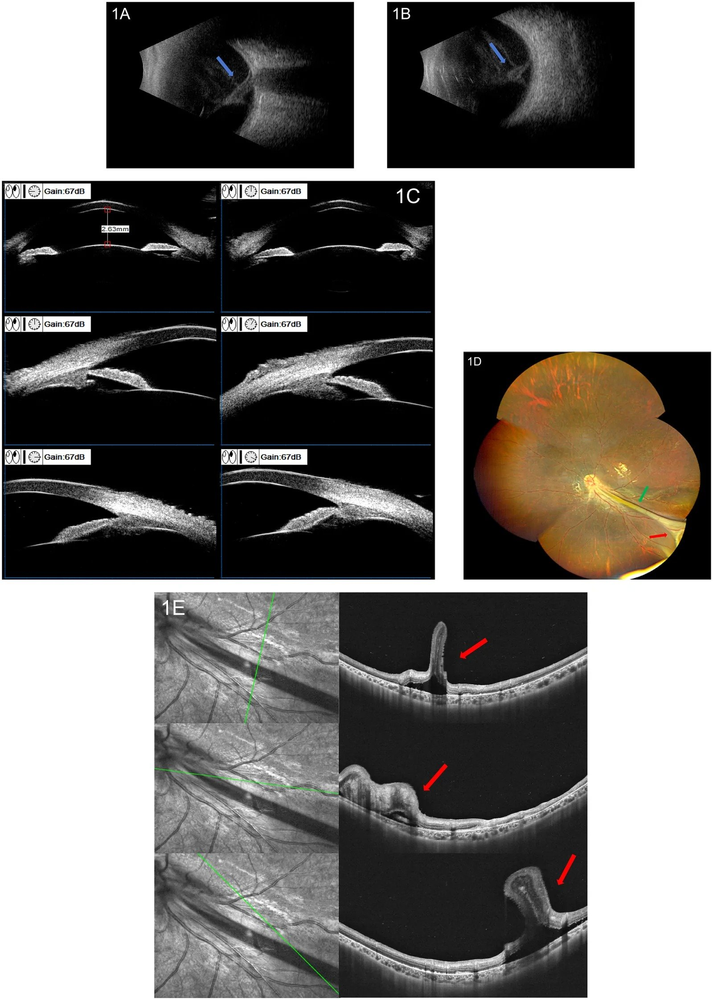
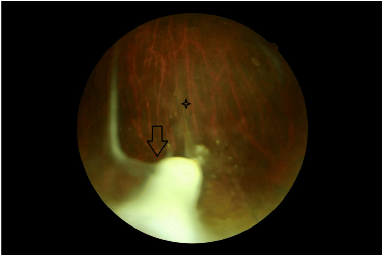
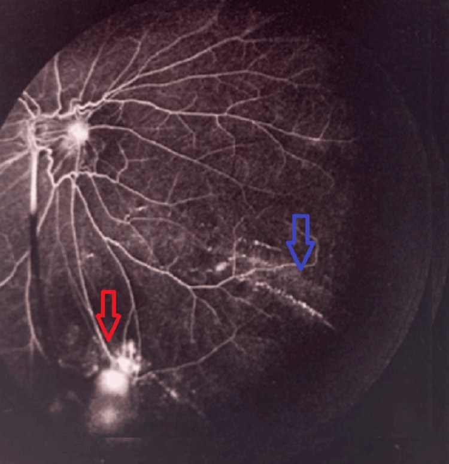
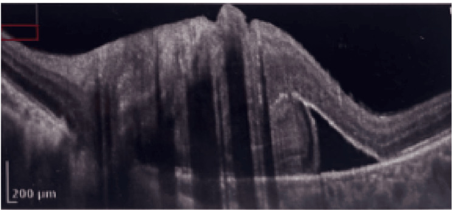
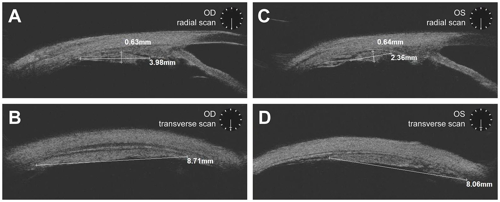
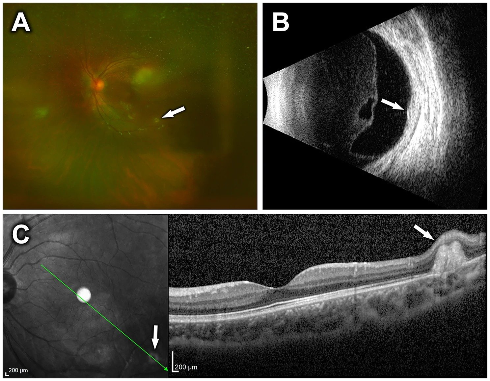
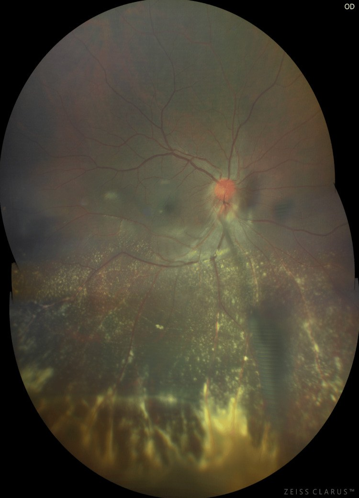

466 — Toxocariasis nội nhãn (ấu trùng di chuyển ở mắt): u hạt ngoại vi + dây co kéo / Ocular toxocariasis (ocular larva migrans)
Tags: pattern:u-hat-vong-mac pattern:day-co-keo-dich-kinh pattern:leukocoria vung:vong-mac vung:tre-em protocol:ELISA-Toxocara protocol:B-scan protocol:UBM protocol:FA
Mức chắc chắn (certainty): tổng hợp y văn (literature synthesis) — tổng hợp từ y văn mở 2009–2026 (Cureus, Front Med, J Ophthalmic Inflamm Infect, J Vitreoretin Dis, PLoS NTD, Int J Med Sci); có gắn hình thái ca nguyên văn từ các bài gốc (như bài 457) nhưng nội dung nhóm tự biên.
1. Tổng quan — ấu trùng Toxocara vào mắt gây u hạt & co kéo
- Bệnh học (pathology): Toxocara canis (giun đũa chó) và T. cati (mèo) là ký sinh ở ruột non chó mèo, đẻ hàng trăm nghìn trứng/ngày; trứng ra môi trường, hoá phôi sau vài tuần thành ấu trùng giai đoạn L2 và tồn tại rất lâu trong đất. Người — đặc biệt trẻ 2–10 tuổi — nhiễm do ăn phải trứng đã hoá phôi (chơi đất/cát, đồ ăn bẩn, rau sống; đôi khi thịt tái). Ấu trùng nở ở ruột non → xuyên thành ruột → tĩnh mạch cửa → lan toàn thân. Ở người (vật chủ "lạc" — paratenic host), ấu trùng không trưởng thành thành giun trưởng thành, không nhân lên, mà di chuyển mô vô định (do đó gọi "ấu trùng di chuyển"). Vào mắt = ocular larva migrans (OLM).
- TẠI SAO ra hình ảnh (theo Argon):
- Tổn thương do phản ứng miễn dịch viêm u hạt quanh ấu trùng (đặc biệt khi ấu trùng chết, giải phóng kháng nguyên) — không do ấu trùng "ăn" võng mạc. Vì vậy hình ảnh là u hạt (granuloma) ở mô võng mạc/hắc mạc và viêm dịch kính kèm theo.
- Khi tổ chức u hạt xơ hoá, mô xơ co kéo dính võng mạc với dịch kính → dải/dây co kéo từ u hạt tới đĩa thị (vitreoretinal traction band) — đây là dấu hiệu chữ ký của thể u hạt ngoại vi. Co kéo gây nếp gấp võng mạc, màng trước võng mạc, bong võng mạc co kéo (TRD).
- Trên siêu âm B-scan: u hạt = khối tăng hồi âm (hyperechoic) dính võng mạc; dây/dải xơ = màng tăng hồi âm chạy từ đĩa thị ra ngoại vi, di động hạn chế (khác màng do bong võng mạc nguyên phát di động nhiều). UBM thấy rõ u hạt ở pars plana (trước xích đạo) — vùng đáy mắt thường khó nhìn.
- Trên FA: vùng hoạt tính viêm mạch rò thuốc, tân mạch; trên OCT: phù hoàng điểm dạng nang (CME), phù đĩa thị, bong thanh dịch dưới võng mạc, màng trước võng mạc co kéo.
- Dịch tễ & ngưỡng định lượng:
- Huyết thanh dương Toxocara toàn cầu 19,0% (KTC 95%: 16,6–21,4; 265.327 người/71 nước); cao nhất châu Phi 37,7%, Đông Nam Á 34,1%, thấp nhất Đông Địa Trung Hải 8,2%; châu Âu 10,5% (Rostami et al., PLoS NTD 2019, PMC6922318).
- OLM chiếm ~1–2% các ca viêm màng bồ đào (uveitis) ở TRẺ; tuổi chẩn đoán trung bình 7,5 tuổi (2–31 tuổi), 80% < 16 tuổi; thường một bên (~90%); chỉ ~2% có tiền sử từng bị hội chứng ấu trùng di chuyển nội tạng (visceral larva migrans — VLM) (Pivetti-Pezzi P, Int J Med Sci 2009, PMC2659485).
- Ba thể lâm sàng & tần suất: viêm nội nhãn mạn ~25% (tuổi 2–8); u hạt cực sau 25–46% (tuổi 6–14); u hạt ngoại vi 20–40% (tuổi 6–40, 90% ở thái dương, u hạt nằm trước xích đạo). Nguyên nhân giảm thị lực: viêm dịch kính nặng 52,6%, phù hoàng điểm dạng nang 47,4%, bong võng mạc co kéo 36,8%.
- Toxocariasis HAI BÊN là hiếm: ca-series 10 bệnh nhân (tuổi 21 ± 15), khởi phát hai mắt không đồng thì (asynchronous), mắt đến trước nặng hơn. U hạt ngoại vi 16 mắt (mắt đến trước/sau: 9/7), u hạt cực sau 3 mắt; u hạt ngoại vi mắt đến trước 6,38 ± 1,69 mm vs mắt đến sau 5,29 ± 1,77 mm (p = 0,045); tỷ lệ TRD tăng 25% → 60% (p = 0,016) (Gu J et al., J Ophthalmic Inflamm Infect 2026, PMC13627495).
2. Mẫu hình + chẩn đoán phân biệt theo vị trí & thể bệnh (Gamut)
- Mẫu hình cửa vào: trẻ (thường 2–10 tuổi) giảm thị lực MỘT bên từ từ, hoặc leukocoria (mất ánh đồng tử đỏ), lác mới xuất hiện, mắt đỏ/viêm màng bồ đào không rõ nguyên nhân; tiền sử chơi đất/cát, nuôi chó mèo.
- Gamut theo thể (xếp theo cơ chế — quan trọng vì tiên lượng khác nhau):
- U hạt ngoại vi (peripheral granuloma, 20–40%): u hạt trước xích đạo, 90% ở thái dương; dây xơ co kéo từ u hạt tới đĩa thị; thường ít viêm, hay phát hiện muộn vì ngoại vi. Tiên lượng khá nhất.
- U hạt cực sau (posterior pole granuloma, 25–46%): khối vàng–trắng ở cực sau, nếp gấp võng mạc (retinal folds), tân mạch trong u, CME, xuất huyết quanh u.
- Viêm nội nhãn mạn (chronic endophthalmitis, ~25%): viêm dịch kính nặng + màng cyclitic, khối giả u hạt ở cực sau, hypopyon, leukocoria — nặng nhất, dễ nhầm retinoblastoma/nấm.
- Thể không điển hình: viêm mạch võng mạc ngoại vi đơn thuần, u hạt + viêm mạch + co kéo (ca 7 tuổi của El Korno et al.), hoặc hai bên.
- Gamut chẩn đoán phân biệt (theo thứ tự PHẢI loại trừ):
- Retinoblastoma — loại trừ TRƯỚC TIÊN (canxi hoá thô, trẻ < 5 tuổi, gen RB1).
- Coats disease — giãn mạch–teo mao mạch + xuất tiết lipid, một bên, nam > nữ.
- PFV/PHPV — dây xơ từ sau thuỷ tinh thể, một bên, không viêm.
- ROP (nếu trẻ non tháng) và FEVR (vô mạch ngoại vi hai bên + gia đình).
- Toxoplasma retinochoroiditis — ổ viêm hắc–võng mạc + sẹo tăng sắc tố bờ.
- DUSN (viêm thần kinh võng mạc cấp lan toả một bên) — ấu trùng di động thấy được + tiến triển teo thị.
- Viêm nội nhãn nội sinh (nấm/vi khuẩn), pars planitis, nếp gấp võng mạc bẩm sinh.
- Mnemonic cho trẻ leukocoria một bên — "CROP TAPE": Calcification (RB) · Rb (retinoblastoma) · OLM/toxocara · PFV · Trauma · Angiomatosis (Coats) · Prematurity (ROP) · Exudative FEVR.
3. Bảng so sánh phân biệt (ma trận đối chiếu)
| Thực thể (entity) | Hình ảnh điển hình | Chốt vào (rule-in) | Chốt loại (rule-out) | Gợi ý xác nhận |
|---|---|---|---|---|
| Toxo — u hạt ngoại vi | U hạt vàng–trắng trước xích đạo (90% thái dương) + dây xơ co kéo tới đĩa thị; một bên | U hạt ngoại vi + dải co kéo từ u hạt → đĩa thị + tiền sử chó mèo/đất cát, một bên | Canxi hoá thô trong khối → RB; xuất tiết lipid + phình túi → Coats | ELISA Toxocara IgG; UBM vùng pars plana |
| Toxo — u hạt cực sau | Khối vàng–trắng cực sau + nếp gấp võng mạc, tân mạch trong u, CME | Khối cực sau + nếp gấp võng mạc + CME + huyết thanh (+) | Khối đặc + canxi hoá → RB; màng nội nhãn đục đều → lymphoma | OCT (CME), FA (rò), ELISA |
| Toxo — viêm nội nhãn mạn | Viêm dịch kính nặng + màng cyclitic, giả u hạt cực sau, hypopyon, leukocoria | Viêm dịch kính nặng + khối u hạt + hypopyon ở trẻ | Cấy/PCR nấm (Candida), vi khuẩn → nội sinh; canxi hoá → RB | Cấy + PCR dịch kính, UBM, ELISA |
| Retinoblastoma (loại trừ TRƯỚC) | Khối đặc trong nhãn cầu + canxi hoá THÔ; < 5 tuổi | Canxi hoá trong khối ở trẻ nhỏ = RB tới khi loại trừ | Không canxi hoá + dây co kéo + huyết thanh Toxocara (+) → OLM | MRI sọ–hốc mắt + hội chẩn ung thư nhi |
| Coats disease | Giãn mạch–teo mao mạch + xuất tiết lipid vàng, một bên | Xuất tiết vàng + phình túi "bóng đèn", nam, một bên | U hạt đặc + dây co kéo tới đĩa thị → OLM | FA góc rộng + OCT |
| PFV/PHPV | Dây xơ trắng từ sau thuỷ tinh thể, một bên, có thể đục thuỷ tinh thể/nhãn cầu nhỏ | Dây xơ nối thuỷ tinh thể–võng mạc, KHÔNG viêm, đủ tháng | Có u hạt + viêm dịch kính → OLM | B-scan/UBM; MRI khi cần |
| FEVR | Vô mạch ngoại vi HAI bên + kéo võng mạc/mạch thái dương | Vô mạch ngoại vi hai bên + tiền sử gia đình | Một bên + u hạt đặc → OLM/Coats | WFFA + xét gen (FZD4/LRP5/NDP) |
| Toxoplasma retinochoroiditis | Ổ viêm hắc–võng mạc cấp + sẹo tăng sắc tố bờ, tái phát | Sẹo tăng sắc tố bờ + ổ hoạt động lân cận | U hạt trước xích đạo + dây co kéo → OLM | Huyết thanh/PCR dịch kính |

Trái: thể u hạt ngoại vi — u hạt vàng–trắng vùng thái dương-dưới (mũi tên) + dây xơ và bao mạch (ngôi sao), hướng tới đĩa thị. Phải: thể u hạt cực sau — cùng một tổn thương nhìn bằng 3 phương thức: (A) ảnh góc siêu rộng, (B) B-scan (khối dày võng mạc tăng hồi âm, mũi tên), (C) OCT (nếp gấp/dày võng mạc, mũi tên). Nguồn: Cureus 2025 (PMC12795621) Fig. 1, CC BY 4.0 + J Ophthalmic Inflamm Infect 2026 (PMC13627495) Fig. 2, CC BY 4.0; ảnh ghép letterbox, giữ nguyên bản.
Trái: Toxocariasis — dây xơ dày chạy từ u hạt ngoại vi tới đĩa thị, co kéo võng mạc (mũi tên). Phải: màng giả PFV/PHPV — ảnh tiền phòng (A) thấy dây màng trắng sau thuỷ tinh thể + B-scan (B) màng tăng hồi âm hình phễu từ đĩa thị tới bao sau thuỷ tinh thể. Khác biệt chốt: OLM có u hạt + viêm, PFV không viêm. Nguồn: Cureus 2025 (PMC12795621) Fig. 2, CC BY 4.0 + J Vitreoretin Dis 2026 (PMC13038477) Fig. 1, CC BY-NC 4.0; ảnh ghép letterbox, giữ nguyên bản.Dấu hiệu chữ ký & đọc chuẩn xác
- Dây co kéo (traction band) từ u hạt ra đĩa thị: dấu mạnh nhất gợi OLM — gặp ở thể u hạt ngoại vi. Đừng nhầm với màng co kéo sau bong võng mạc (không có u hạt) hay dây PFV (không viêm, dính thuỷ tinh thể).
- U hạt + viêm dịch kính: hỗ trợ OLM; u hạt im lặng, không viêm vẫn có thể gặp ở thể ngoại vi.
- FA có thể BỎ SÓT u hạt ngoại vi khi bị màng sau thuỷ tinh thể che (ca PMC13038477: 2 u hạt hắc–võng mạc ở 5h và 6h không thấy trên FA, chỉ thấy khi mổ). → không dựa FA đơn thuần để loại trừ.

FA thì sớm ở ca giả PFV: (A) vô mạch dọc cuống dịch kính; (B) vùng vô mạch ngoại vi trên kèm rò mao mạch. Nhắc lại: ở tổn thương ngoại vi, FA có thể bỏ sót nếu bị màng/đục che → cần đè củng mạc + UBM + soi tới ora. Nguồn: Parellada SE et al., J Vitreoretin Dis 2026 (PMC13038477), Fig. 2, CC BY-NC 4.0.4. Protocol chụp & xét nghiệm + hệ phân độ
- Khám & chụp (giao thức):
- Soi đáy mắt giãn đồng tử + đè củng mạc (scleral depression) tới ora serrata — bắt buộc, vì u hạt ngoại vi nằm trước xích đạo dễ bị bỏ sót khi chỉ nhìn cực sau.
- Chụp ảnh đáy mắt / ảnh góc siêu rộng (UWF) để theo dõi tổn thương & nếp gấp.
- Siêu âm B-scan: u hạt tăng hồi âm dính võng mạc; dây/băng tăng hồi âm từ đĩa thị, di động hạn chế; phát hiện bong võng mạc co kéo. UBM (siêu âm sinh học) cho pars plana — vùng khó nhìn, đo được kích thước u hạt, màng cyclitic, bong thể mi.
- FA đánh giá viêm mạch/tân mạch/rò; OCT đánh giá CME, nếp gấp, bong thanh dịch, màng trước võng mạc.
- CT/MRI hốc mắt khi cần loại trừ retinoblastoma (tìm canxi hoá, lan ngoài nhãn cầu) trước mọi can thiệp.
- Xét nghiệm (ngưỡng):
- ELISA Toxocara IgG huyết thanh: độ nhạy ~91%, độ đặc hiệu ~90%; kết quả ÂM không loại trừ OLM (Pivetti-Pezzi P, PMC2659485).
- Nghi ngờ mà huyết thanh âm → kháng thể kháng Toxocara dịch tiền phòng/dịch kính + hệ số Goldmann–Witmer (chứng minh sản xuất kháng thể nội nhãn).
- Bạch cầu ái toan máu ngoại vi: thường nhẹ hoặc bình thường ở thể chỉ có mắt (OLM); tăng rõ hơn ở thể nội tạng (VLM) → không dựa eosinophil để chẩn đoán/loại trừ.
- Điều trị (theo bậc):
- Corticoid (uống/tiêm quanh nhãn) là nền tảng kiểm soát viêm, giảm tạo màng co kéo — luôn cân nhắc "ô dù steroid" khi diệt ấu trùng (larvae chết làm viêm tăng).
- Thuốc diệt giun (albendazole/mebendazole) — còn tranh luận, không dùng phổ quát; phối hợp "ô dù steroid".
- Laser có vai trò hạn chế: diệt ấu trùng di động thấy được hoặc xử lý màng tân mạch hắc mạc.
- Anti-VEGF khi có tân mạch/CNV; phẫu thuật dịch kính (PPV) khi co kéo nặng/bong võng mạc/bục thuỷ tinh thể — lưu ý bong võng mạc tái phát sau mổ tới 24–42% do viêm tồn dư.
- Phòng bệnh: tẩy giun định kỳ cho chó mèo, hạn chế trẻ chơi đất/cát bẩn.

*B-scan (A,B): băng tăng hồi âm trung bình trong dịch kính, chạy từ đĩa thị (A) tới thành nhãn cầu phía thái dương (B), di động hạn chế = co kéo dịch kính–võng mạc. UBM (C): montage theo giờ — bản đồ u hạt ngoại vi vùng pars plana. Nguồn: Chen J & Zhang L, Front Med 2026 (PMC13553358), Fig. 1, CC BY 4.0.*flowchart TD
A[Trẻ leukocoria / giảm thị lực MỘT bên, có thể lác mới] --> B{Canxi hóa THÔ trong khối trên CT/US?}
B -->|Có| C[RETINOBLASTOMA - MRI sọ-hốc mắt + hội chẩn ung thư nhi]
B -->|Không| D[Soi đáy mắt + đè củng mạc + UWF + B-scan + UBM]
D --> E{Có u hạt +/- dây co kéo tới đĩa thị?}
E -->|Có, một bên| F[ELISA Toxocara IgG huyết thanh]
F --> G{"Kháng thể (+)?"}
G -->|Có| H[XÁC NHẬN Toxocariasis nội nhãn]
G -->|Không| I[Kháng thể dịch tiền phòng/dịch kính + Goldmann-Witmer; PCR loại trừ nấm/vi khuẩn]
I --> H
H --> J[Đánh giá biến chứng: CME, TRD, tân mạch]
J -->|Viêm/CME| K[Corticoid toàn thân +/- tiêm quanh nhãn; anti-VEGF nếu tân mạch]
J -->|Co kéo/bong võng mạc| L[Phẫu thuật dịch kính PPV]
E -->|Không| M[Phân nhánh: Coats / PFV / FEVR / Toxoplasma / DUSN]
- Phân độ: bệnh không có hệ phân độ RADS riêng; mô tả theo 3 thể (viêm nội nhãn mạn / u hạt cực sau / u hạt ngoại vi) và mức biến chứng (CME, nếp gấp, TRD). Tiên lượng gắn với thể: u hạt ngoại vi có thể yên lặng nhưng co kéo gây bong võng mạc muộn.
5. Biến thể bình thường và cạm bẫy
- Cạm bẫy chết người: leukocoria/khối trong nhãn cầu ở trẻ = loại trừ retinoblastoma TRƯỚC TIÊN. Canxi hoá thô trong khối = RB tới khi loại trừ; OLM không canxi hoá điển hình. Không laser/đốt mắt khi chưa loại trừ RB (nguy cơ gieo rắc).
- Huyết thanh âm KHÔNG loại trừ OLM → phải tìm kháng thể nội nhãn (dịch tiền phòng/Goldmann–Witmer). Ngược lại huyết thanh dương không tự động xác nhận OLM (nhiễm Toxocara huyết thanh khá phổ biến — 19% dân số toàn cầu) → luôn gắn với hình thái đáy mắt.
- Eosinophil máu thường bình thường ở thể chỉ có mắt → đừng vì "eosinophil bình thường" mà bỏ chẩn đoán.
- FA/soi đáy mắt cực sau có thể bỏ sót u hạt ngoại vi (che bởi màng/đục) → UBM + đè củng mạc tới ora là cần thiết.
- Toxocariasis hai bên là hiếm nhưng CÓ — "một bên" không loại trừ tuyệt đối; khởi phát hai mắt không đồng thì và bất đối xứng là chìa khoá (PMC13627495).
- Bong võng mạc tái phát sau mổ 24–42% do viêm tồn dư → cần "ô dù steroid" và theo dõi lâu dài.
- Cạm bẫy hình học: dây co kéo từ u hạt ra đĩa thị (OLM) khác màng co kéo hình phễu của PFV (dính thuỷ tinh thể, không viêm) và khác nếp gấp võng mạc bẩm sinh (không u hạt, không tiền sử nhiễm).
6. Tự lượng giá — Blind Quiz
Ca 1 — Bé trai 7 tuổi, mất thị lực trái tiến triển 3 tháng; nhà nuôi chó. Đáy mắt trái vùng thái dương-dưới:

- Gợi ý lâm sàng: thị lực phải 20/20, trái "đếm ngón tay"; có RAPD; ELISA Toxocara dương.
- Hỏi: mô tả 2 dấu chính? Chẩn đoán & thể? DDx phải loại trừ trước?
Bấm để hiện đáp án (findings + chẩn đoán)
- Dấu hiệu (findings): u hạt vàng–trắng vùng thái dương-dưới ngoại vi (mũi tên) + dây xơ (fibrous band) + bao mạch (vascular sheathing, ngôi sao).
- Chẩn đoán (diagnosis): Toxocariasis nội nhãn — thể u hạt NGOẠI VI (kèm viêm mạch võng mạc ngoại vi). DDx phải loại trừ trước: retinoblastoma (tìm canxi hoá thô), Coats, PFV. Xác nhận: ELISA (+) + soi đáy mắt/UBM vùng pars plana.
- Nguồn ảnh: El Korno O et al., Cureus 2025, PMC12795621 Fig. 1, CC BY 4.0.
Ca 2 — Cùng bệnh nhân, dây xơ co kéo rõ; FA vùng dưới:

- Hỏi: trên FA thấy gì? Hệ quả lâm sàng là gì (cơ chế nào gây mất thị lực)?
Bấm để hiện đáp án (findings + chẩn đoán)
- Dấu hiệu (findings): viêm mạch võng mạc ngoại vi hoạt động (mũi tên xanh) rò + nhuộm thuốc vùng dưới, tương ứng tân mạch võng mạc (mũi tên đỏ); có rò hoàng điểm lan toả.
- Ý nghĩa: đây là tổn thương viêm mạch + tân mạch (thể gây mất thị lực — viêm dịch kính nặng 52,6%, CME 47,4%, TRD 36,8%). Xử trí: corticoid (nền) ± anti-VEGF cho tân mạch; laser cho vùng tân mạch.
- Nguồn ảnh: El Korno O et al., Cureus 2025, PMC12795621 Fig. 4, CC BY 4.0.
Ca 3 — Bé 7 tuổi (mắt đối diện bình thường), OCT hoàng điểm mắt phải:

- Hỏi: OCT cho thấy biến chứng gì (thuộc nhóm nào ở mục 1)? Có phải u hạt không?
Bấm để hiện đáp án (findings + chẩn đoán)
- Dấu hiệu (findings): bong thanh dịch dưới võng mạc + màng trước võng mạc (ERM) xơ co kéo, gây dày hoàng điểm — tương ứng nhóm phù hoàng điểm (47,4%) / co kéo.
- Lưu ý: đây là biến chứng ở cực sau, không phải u hạt (u hạt nằm ngoại vi). Cho thấy OLM ngoại vi vẫn có thể gây tổn thương hoàng điểm nặng do viêm/co kéo.
- Nguồn ảnh: El Korno O et al., Cureus 2025, PMC12795621 Fig. 6, CC BY 4.0.
Ca 4 — Ca-series toxocariasis HAI BÊN; u hạt thì có dấu gì trên UBM?

- Hỏi: UBM giúp thấy tổn thương ở vị trí nào mà soi đáy mắt thường bỏ sót? Đo được gì?
Bấm để hiện đáp án (findings + chẩn đoán)
- Dấu hiệu (findings): u hạt dạng khối tăng hồi âm (hyperechoic), bờ rõ, trục dài xếp tiếp tuyến với thể mi ở vùng pars plana (vị trí 6 giờ), thấy hai bên (A,C = lát hướng tâm; B,D = lát ngang).
- Ý nghĩa: UBM cho pars plana — trước xích đạo, vùng soi đáy mắt khó tới; đo được kích thước (u hạt ngoại vi mắt đến trước 6,38 ± 1,69 mm vs mắt đến sau 5,29 ± 1,77 mm, p = 0,045).
- Nguồn ảnh: Gu J et al., J Ophthalmic Inflamm Infect 2026, PMC13627495 Fig. 1, CC BY 4.0.
Ca 5 — U hạt cực sau: nhận diện trên 3 phương thức:

- Hỏi: trên ảnh góc siêu rộng (A) u hạt nằm ở đâu (nông/sâu)? B-scan (B) và OCT (C) bổ sung gì?
Bấm để hiện đáp án (findings + chẩn đoán)
- Dấu hiệu (findings): (A) khối vàng, nằm sâu trong võng mạc ở vùng cực sau (mũi tên); (B) B-scan: dày võng mạc khu trú, hồi âm trung bình–cao (mũi tên); (C) OCT: nếp gấp/dày võng mạc tại u hạt (mũi tên).
- Chẩn đoán (diagnosis): u hạt cực sau (posterior pole granuloma) — thể hay gặp 25–46%. Xác nhận: ELISA/huyết thanh nội nhãn.
- Nguồn ảnh: Gu J et al., J Ophthalmic Inflamm Infect 2026, PMC13627495 Fig. 2, CC BY 4.0.
Ca 6 — Trẻ viêm màng bồ đào hai bên; ảnh góc siêu rộng mắt phải:

- Gợi ý lâm sàng: đau khớp, viêm màng bồ đào trước hai bên; đáy mắt phải viêm.
- Hỏi: dấu chính? Vì sao tổn thương này gợi nguyên nhân ký sinh (không phải viêm màng bồ đào tự miễn)?
Bấm để hiện đáp án (findings + chẩn đoán)
- Dấu hiệu (findings): đĩa thị sung huyết, bao mạch võng mạc động–tĩnh mạch, thâm nhiễm/xuất tiết vùng ngoại vi dưới, và dây mạch xơ (fibrovascular stalk) từ đĩa thị chạy xuống vùng viêm nặng nơi có u hạt ngoại vi (ấn đè củng mạc thấy u hạt bờ). FA: rò đĩa thị + nhuộm "hình cánh hoa" hoàng điểm + băng tăng huỳnh quang từ đĩa xuống dưới.
- Chẩn đoán (diagnosis): Toxocariasis nội nhãn (u hạt ngoại vi + dây xơ mạch) trên nền viêm màng bồ đào hai bên; nguyên nhân ký sinh tạo u hạt + dây xơ, khác viêm màng bồ đào tự miễn đơn thuần (không có u hạt kiểu này).
- Nguồn ảnh: Tanchuling RV et al., Cureus 2025, PMC12096418 Fig. 2, CC BY 4.0.
Ca 7 — Hai đáy mắt: gọi tên cơ chế mỗi bên và cách phân biệt:
- Hỏi: bên nào là tổn thương ký sinh có u hạt + viêm? Bên nào là màng giả PFV không viêm? Cái gì chốt?
Bấm để hiện đáp án (findings + chẩn đoán)
- Trái = Toxocariasis (OLM): dây xơ dày từ u hạt ngoại vi tới đĩa thị, co kéo võng mạc; có u hạt + viêm.
- Phải = PFV/PHPV: màng trắng sau thuỷ tinh thể (A) + màng tăng hồi âm hình phễu dính đĩa thị → bao sau thuỷ tinh thể (B); không viêm, không u hạt.
- Chốt phân biệt: u hạt + dây co kéo tới đĩa thị + viêm = OLM; màng phễu dính thuỷ tinh thể, không viêm = PFV. Luôn loại trừ retinoblastoma (canxi hoá thô) trước.
- Nguồn: Cureus 2025 (PMC12795621) CC BY 4.0 + J Vitreoretin Dis 2026 (PMC13038477) CC BY-NC 4.0.
Bài liên quan chéo
- 400 – Tổng quan Mắt & thị giác (bảng DDx mắt)
- 450 – Mắt nhi: ROP, Coats, PHPV
- 412 – U trong nhãn cầu (retinoblastoma — loại trừ trước)
- 457 – Bệnh "giả ROP" ở trẻ đủ tháng (FEVR, Norrie, IP, Coats)
- 448 – U hắc mạc (khối đặc trong nhãn cầu)
- 445 – Bong võng mạc (co kéo vs rách nguyên phát)
- 446 – Phù hoàng điểm viêm vs DME (CME — biến chứng của OLM)
- 411 – Siêu âm nhãn cầu (B-scan/UBM)
- 463 – Viêm nội nhãn nội sinh do nấm (DDx thể viêm nội nhãn)
Ảnh
- Tên file:
466_toxocariasis_<Dấu hiệu>_<Modality>_PMC*-Fig*-CCBY*.jpg; nguồn + giấy phép từng ảnh trongimages/CREDITS.md. - Ảnh CC BY-NC (PMC13038477) dùng được tạo tác phẩm phái sinh (ảnh ghép); ảnh ghép letterbox giữ nguyên bản. (Các ảnh CC BY-NC-ND như PMC12661507 nếu dùng chỉ giữ nguyên bản, không ghép.)
- AuntMinnie (Case of the Day): chỉ dẫn link, không tải (xem
sources.md).
Không dùng để chẩn đoán độc lập khi chưa có người hướng dẫn.